Loading model...
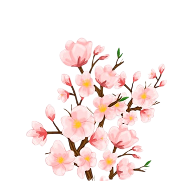
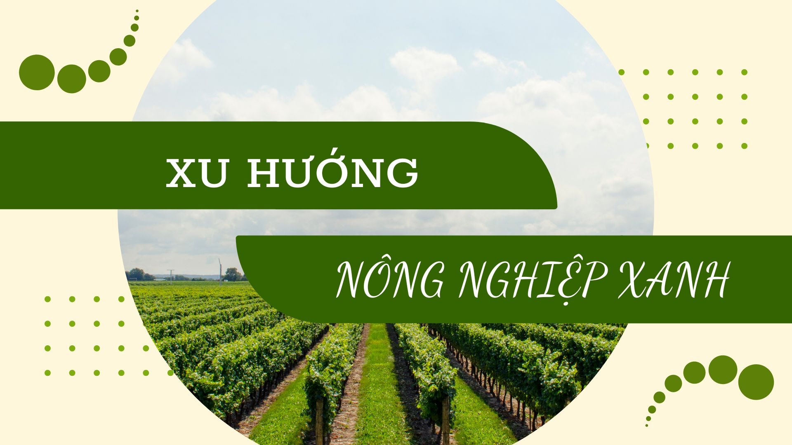
Tập trung vào việc bảo tồn thương hiệu “tỏi Lý Sơn” gắn liền với môi trường bền vững. Khuyến khích áp dụng quy trình canh tác hữu cơ, hạn chế phân bón hóa học và thuốc bảo vệ thực vật, thay thế bằng phân vi sinh và chế phẩm sinh học. Đồng thời, việc quản lý đất cát đặc trưng của đảo cần gắn với tái sử dụng hợp lý nguồn phụ phẩm nông nghiệp, tiết kiệm nước tưới và bảo vệ hệ sinh thái biển ven đảo.
ứng dụng kỹ thuật số trong trồng tỏi ở đảo Lý Sơn nhằm hiện đại hóa quy trình sản xuất, nâng cao năng suất và chất lượng sản phẩm. Người dân có thể áp dụng công nghệ cảm biến để giám sát độ ẩm, dinh dưỡng và điều kiện đất cát, sử dụng hệ thống tưới nhỏ giọt tự động kết nối IoT để tiết kiệm nước và phân bón. Đồng thời, sử đụng các nền tảng dự báo thời tiết nhanh và chính xác.
Tập trung vào xây dựng giá thị trường ổn định, gắn sản xuất với thị trường tiêu thụ lâu dài. Cần đẩy mạnh phát triển thương hiệu “tỏi Lý Sơn” với chứng nhận chỉ dẫn địa lý và tiêu chuẩn an toàn. Song song đó, việc đa dạng hóa sản phẩm từ tỏi như tinh dầu, tỏi đen, sản phẩm quà tặng du lịch để nâng cao giá trị kinh tế. Đảm bảo đầu ra ổn định, nâng cao thu nhập cho người dân, vừa giữ vững uy tín đặc sản Lý Sơn trên thị trường trong và ngoài nước.
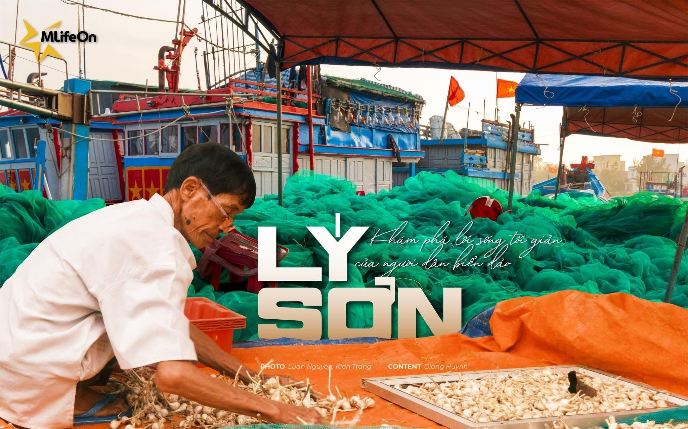
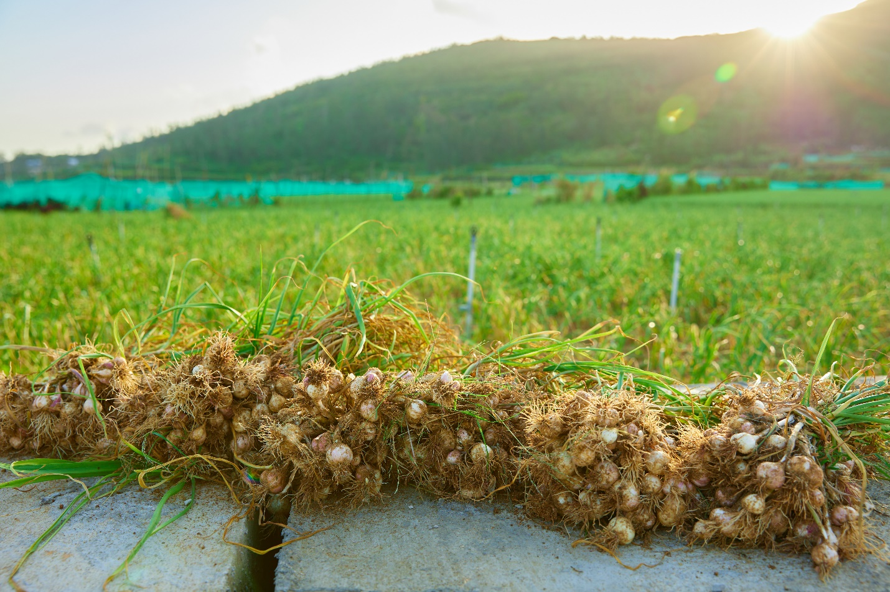
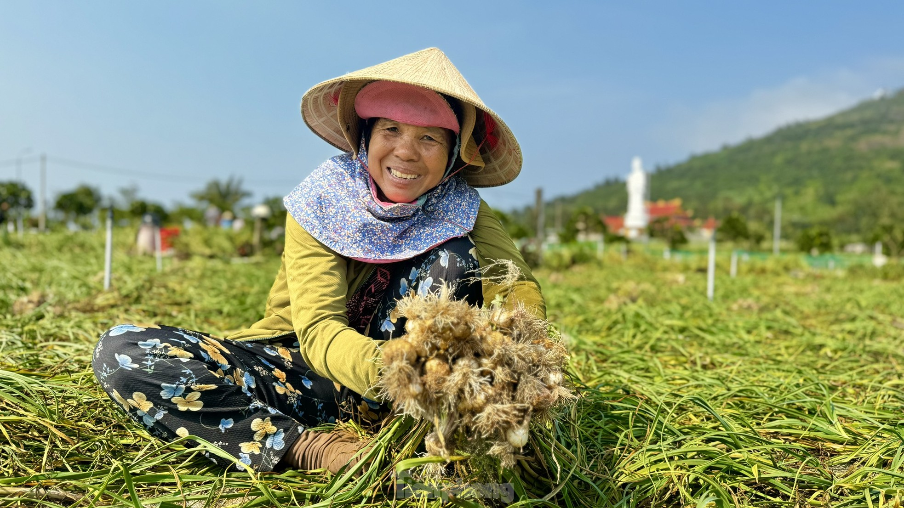
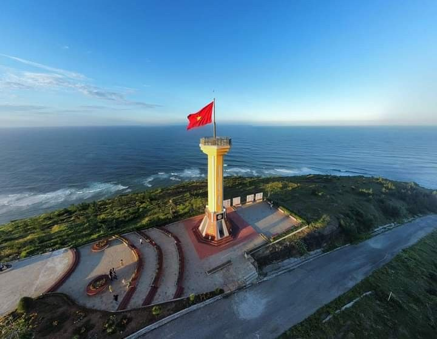
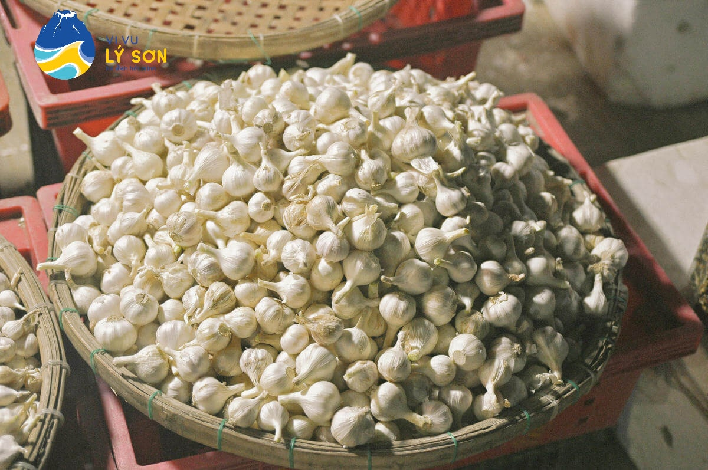
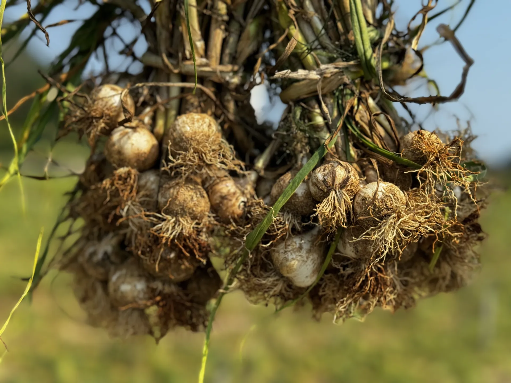
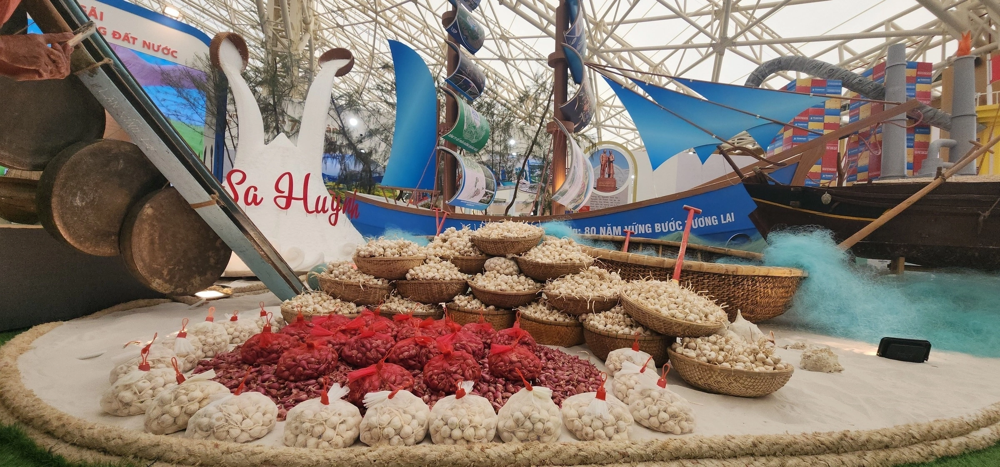
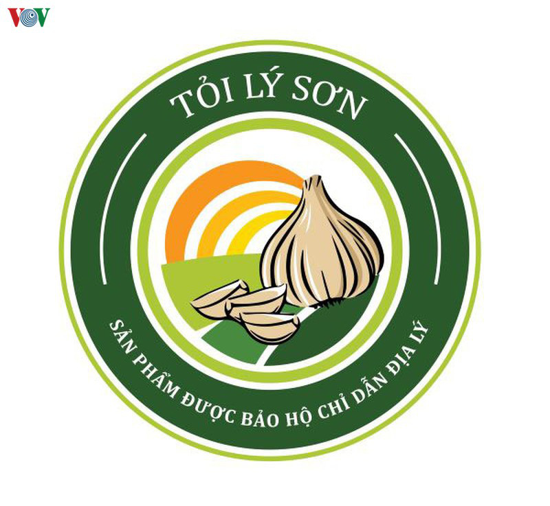
Chỉ dẫn địa lý Tỏi Lý Sơn đã được Cục Sở hữu trí tuệ (Bộ Khoa học và Công nghệ) cấp giấy chứng nhận cho sản phẩm tỏi Lý Sơn trên thị trường.
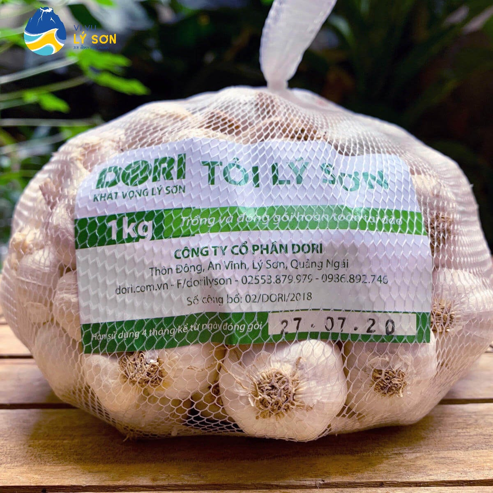
Tỏi Lý Sơn được xem là "vua" của các loại tỏi nhờ vào hàm lượng dinh dưỡng cao và nhiều tác dụng trong đời sống...
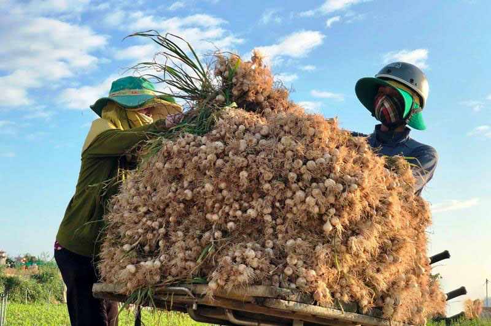
Phương pháp canh tác tỏi Lý Sơn tận dụng đất đỏ bazan pha cát đặc trưng của đảo, kết hợp với các điều kiện từ môi trường, kinh nghiệm,...
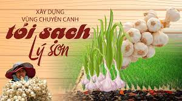
Giải pháp đưa thương hiệu của đất đảo vươn xa và bền vũng hơn trong những năm tiếp theo
Niềm vui chồng lẫn nỗi lo về đầu ra của sản phẩm.
Khám phá đặc sản nổi tiếng ở vùng đất này.
Câu chuyện về làm tỏi sạch.
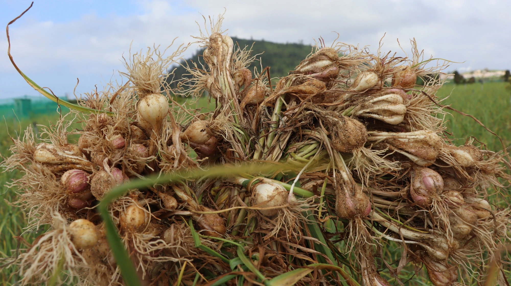
Tỏi Lý Sơn được mùa, nông dân chưa kịp vui đã lo về giá thành thị trường...